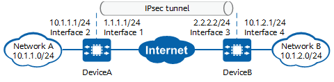

Example for Establishing an IPsec Tunnel in ISAKMP Mode (Using SM Digital Envelope Authentication)
Networking Requirements
In Figure 1, networks A and B connect to the Internet through DeviceA and DeviceB respectively, and there are reachable routes between the two devices. An ISAKMP IPsec tunnel needs to be established between public network interfaces (interface 1 and interface 3) on the two devices. The two ends of the tunnel use SM digital envelope authentication to ensure secure transmission of data flows on specific network segments in networks A and B.
DeviceA and DeviceB use the SM digital envelope for authentication. During the authentication, DeviceA sends its local certificate to DeviceB. DeviceB then uses the CA certificate obtained to authenticate the local certificate of DeviceA. If the authentication is successful, DeviceA is legitimate and allowed to establish an IPsec tunnel with DeviceB. IPsec authentication is bidirectional, so DeviceA also needs to authenticate DeviceB using the same procedure.

In this example, interface 1 and interface 2 represent 10GE 0/0/1 and 10GE 0/0/2 on DeviceA, and interface 3 and interface 4 represent 10GE 0/0/1 and 10GE 0/0/2 on DeviceB.

Item |
Data |
|---|---|
DeviceA |
Interface: 10GE 0/0/1 IP address: 1.1.1.1/24 |
Interface: 10GE 0/0/2 IP address: 10.1.1.1/24 |
|
IPsec configuration Remote address: 2.2.2.2 Authentication mode: SM digital envelope authentication |
|
DeviceB |
Interface: 10GE 0/0/1 IP address: 2.2.2.2/24 |
Interface: 10GE 0/0/2 IP address: 10.1.2.1/24 |
|
IPsec configuration Remote address: 1.1.1.1 Authentication mode: SM digital envelope authentication |
Configuration Roadmap
The tunnel negotiation parameter settings on DeviceA and DeviceB must be the same.
SM digital envelope authentication is defined by State Cryptography Administration of China and can be used only for IKEv1 negotiation in main mode. It cannot be used for IKEv1 negotiation in aggressive mode or for IKEv2 negotiation. By default, the device does not support SA negotiation through IKEv1. To use IKEv1-related functions, you need to load the IKEv1 feature package. For details about how to install the feature package, see "Upgrade Maintenance Configuration" in CLI Configuration Guide > System Management Configuration.
- Configure interfaces.
- Configure static routes to divert tunnel negotiation packets and encrypted data packets transmitted through the tunnel.
- Apply for the local certificate and CA certificate in offline mode and import the certificates to the devices.
- Configure an ISAKMP IPsec policy and apply an IPsec policy group to an interface.
Procedure
- Configure public and private network interfaces on DeviceA.
# Configure the public network interface 10GE 0/0/1.
<HUAWEI> system-view [HUAWEI] sysname DeviceA [DeviceA] interface 10ge 0/0/1 [DeviceA-10GE0/0/1] undo portswitch [DeviceA-10GE0/0/1] ip address 1.1.1.1 24 [DeviceA-10GE0/0/1] quit
# Configure the private network interface 10GE 0/0/2.
[DeviceA] interface 10ge 0/0/2 [DeviceA-10GE0/0/2] undo portswitch [DeviceA-10GE0/0/2] ip address 10.1.1.1 24 [DeviceA-10GE0/0/2] quit
- Configure static routes on DeviceA to divert tunnel negotiation packets and encrypted data packets transmitted through the tunnel.
Assume that the next-hop IP address of the route from DeviceA to the Internet is 1.1.1.254.
# Configure a static route to DeviceB to divert tunnel negotiation packets.
[DeviceA] ip route-static 2.2.2.0 255.255.255.0 1.1.1.254
# Configure a static route to network B to divert encrypted data packets transmitted through the tunnel.
[DeviceA] ip route-static 10.1.2.0 255.255.255.0 1.1.1.254
- Apply for certificates for DeviceA. In this example, apply for a local certificate and a CA certificate in offline mode and import the certificates to DeviceA.
- Configure an ISAKMP IPsec policy on DeviceA and apply an IPsec policy group to 10GE 0/0/1.
- Configure an IPsec policy.
[DeviceA] ipsec policy map1 10 isakmp [DeviceA-ipsec-policy-isakmp-map1-10] security acl 3000 [DeviceA-ipsec-policy-isakmp-map1-10] proposal tran1 [DeviceA-ipsec-policy-isakmp-map1-10] ike-peer b [DeviceA-ipsec-policy-isakmp-map1-10] sa trigger-mode auto [DeviceA-ipsec-policy-isakmp-map1-10] quit
By default, the negotiation for IPsec tunnel establishment is triggered by traffic. To enable automatic negotiation for IPsec tunnel establishment, run the sa trigger-mode auto command.
- Configure an IPsec policy.
- Configure public and private network interfaces on DeviceB.
# Configure the public network interface 10GE 0/0/1.
<HUAWEI> system-view [HUAWEI] sysname DeviceB [DeviceB] interface 10ge 0/0/1 [DeviceB-10GE0/0/1] undo portswitch [DeviceB-10GE0/0/1] ip address 2.2.2.2 24 [DeviceB-10GE0/0/1] quit
# Configure the private network interface 10GE 0/0/2.
[DeviceB] interface 10ge 0/0/2 [DeviceB-10GE0/0/2] undo portswitch [DeviceB-10GE0/0/2] ip address 10.1.2.1 24 [DeviceB-10GE0/0/2] quit
- Configure static routes on DeviceB to divert tunnel negotiation packets and encrypted data packets transmitted through the tunnel.
Assume that the next-hop IP address of the route from DeviceB to the Internet is 2.2.2.254.
# Configure a static route to DeviceA to divert tunnel negotiation packets.
[DeviceB] ip route-static 1.1.1.0 255.255.255.0 2.2.2.254
# Configure a static route to network A to divert encrypted data packets transmitted through the tunnel.
[DeviceB] ip route-static 10.1.1.0 255.255.255.0 2.2.2.254
- Configure certificates on DeviceB by referring to step 4 of DeviceA. The detailed procedure is not described here.
- Configure an ISAKMP IPsec policy on DeviceB and apply an IPsec policy group to 10GE 0/0/1.
- Configure an IPsec policy.
[DeviceB] ipsec policy map1 10 isakmp [DeviceB-ipsec-policy-isakmp-map1-10] security acl 3000 [DeviceB-ipsec-policy-isakmp-map1-10] proposal tran1 [DeviceB-ipsec-policy-isakmp-map1-10] ike-peer a [DeviceB-ipsec-policy-isakmp-map1-10] sa trigger-mode auto [DeviceB-ipsec-policy-isakmp-map1-10] quit
By default, the negotiation for IPsec tunnel establishment is triggered by traffic. To enable automatic negotiation for IPsec tunnel establishment, run the sa trigger-mode auto command.
- Configure an IPsec policy.
Verifying the Configuration
After the configuration is complete, run the ping command on a device in the protected network segment of network A or network B to trigger IKE negotiation.
If IKE negotiation succeeds, devices in the protected network segments at both ends of the tunnel can ping each other successfully. Otherwise, IKE negotiation fails.
On DeviceA and DeviceB, run the display ike sa and display ipsec sa commands to check SA establishment information. The following example uses the command output on DeviceB, which shows that IKE SAs and IPsec SAs have been established successfully.
<DeviceB> display ike sa Total number of IKE SA in all CPU : 2 Total number of phase 1 SA in all CPU : 1 Total number of phase 2 SA in all CPU : 1 Flag Description: RD--READY ST--STAYALIVE RL--REPLACED FD--FADING TO--TIMEOUT HRT--HEARTBEAT LKG--LAST KNOWN GOOD SEQ NO. BCK--BACKED UP M--ACTIVE S--STANDBY A--ALONE NEG--NEGOTIATING Slot 0, cpu 0 IKE SA information : Number of IKE SA : 2, number of IKE SA1: 1, number of IKE SA2: 1 ----------------------------------------------------------------------------- Conn-ID Peer VPN Flag(s) Phase RemoteType RemoteID ----------------------------------------------------------------------------- 13960 1.1.1.1/500 RD|ST|A v1:2 DN /C=CN/ST=beijing/O=huawei/OU=dev/CN=devicea/testa@user.com 13788 1.1.1.1/500 RD|ST|A v1:1 DN /C=CN/ST=beijing/O=huawei/OU=dev/CN=devicea/testa@user.com -------------------------------------------------------------------------------<DeviceB> display ipsec sa Slot 0, cpu 0 ipsec sa information: =============================== Interface: 10GE0/0/1 =============================== ----------------------------- IPsec policy name: "map1" Sequence number : 10 Acl group : 3000/IPv4 Acl rule : 5 Mode : ISAKMP ----------------------------- Connection ID : 83903371 Encapsulation mode: Tunnel Holding time : 0d 0h 29m 3s Tunnel local : 2.2.2.2/500 Tunnel remote : 1.1.1.1/500 Flow source : 10.1.2.0/255.255.255.0 0/0-65535 Flow destination : 10.1.1.0/255.255.255.0 0/0-65535 [Outbound ESP SAs] SPI: 198624696(0xbd6c5b8) Proposal: ESP-ENCRYPT-SM4-128 ESP-AUTH-SM3 SA remaining key duration(kilobytes/sec): 68785930/1209 SA remaining hard duration (kilobytes/sec): 83885425/1857 Max sent sequence-number: 1 UDP encapsulation used for NAT traversal: N SA encrypted packets (number/bytes): 5885/670890 [Outbound AH SAs] SPI: 190055665(0xb5404f1) Proposal: AH-KEYED-SM3 SA remaining key duration(kilobytes/sec): 5242880/28 Max sent sequence-number: 1 UDP encapsulation used for NAT traversal: N SA encrypted packets(number/bytes): 0/0 [Inbound AH SAs] SPI: 188829305(0xb414e79) Proposal: AH-KEYED-SM3 SA remaining key duration(kilobytes/sec): 5242880/28 Max received sequence-number: 0 UDP encapsulation used for NAT traversal: N SA decrypted packets(number/bytes): 0/0 Anti-replay: Enable Anti-replay window size: 1024 [Inbound ESP SAs] SPI: 163241969 (0x9badff1) Proposal: ESP-ENCRYPT-AES-GCM-256 SA remaining soft duration (kilobytes/sec): 67947069/1173 SA remaining hard duration (kilobytes/sec): 83885425/1857 Max received sequence-number: 5885 UDP encapsulation used for NAT traversal: N SA decrypted packets (number/bytes): 5885/670890 Anti-replay : Enable Anti-replay window size: 1024
Configuration Scripts
- DeviceA
# sysname DeviceA # acl number 3000 rule 5 permit ip source 10.1.1.0 0.0.0.255 destination 10.1.2.0 0.0.0.255 # ipsec proposal tran1 esp authentication-algorithm sm3 esp encryption-algorithm sm4 # ike proposal 10 encryption-algorithm sm4 dh group14 authentication-algorithm sm3 authentication-method sm2 digital-envelope # ike peer b undo version 2 ike-proposal 10 remote-address 2.2.2.2 encryption-certificate pki realm enc signature-certificate pki realm sign # ipsec policy map1 10 isakmp security acl 3000 ike-peer b proposal tran1 sa trigger-mode auto # pki entity user_a common-name devicea country cn email testa@user.com fqdn testa.abc.com ip-address 1.1.1.1 state beijing organization huawei organization-unit dev # pki realm user_a entity user_a key-usage signature enrollment-request signature message-digest-method sm3 sm2 local-key-pair sm2key # pki realm sign pki realm enc # pki enroll-certificate realm user_a pkcs10 filename user_a.req pki import sm2-key-pair enc_privkey_envelope.key pem enc_privkey_envelope.key signkey sm2key pki import-certificate ca realm sign der filename a_ca.cer pki import-certificate local realm sign pem filename sig_cert.pem no-check-same-name pki import-certificate local realm enc pem filename enc_cert.pem no-check-same-name # interface 10GE0/0/2 ip address 10.1.1.1 255.255.255.0 # interface 10GE0/0/1 ip address 1.1.1.1 255.255.255.0 ipsec policy map1 # ip route-static 2.2.2.0 255.255.255.0 1.1.1.254 ip route-static 10.1.2.0 255.255.255.0 1.1.1.254 # return
- DeviceB
# sysname DeviceB # acl number 3000 rule 5 permit ip source 10.1.2.0 0.0.0.255 destination 10.1.1.0 0.0.0.255 # ipsec proposal tran1 esp authentication-algorithm sm3 esp encryption-algorithm sm4 # ike proposal 10 encryption-algorithm sm4 dh group14 authentication-algorithm sm3 authentication-method sm2 digital-envelope # ike peer a undo version 2 ike-proposal 10 remote-address 1.1.1.1 encryption-certificate pki realm enc signature-certificate pki realm sign # ipsec policy map1 10 isakmp security acl 3000 ike-peer a proposal tran1 sa trigger-mode auto # pki entity user_b common-name deviceb country cn email testb@user.com fqdn testb.abc.com ip-address 1.1.1.1 state beijing organization huawei organization-unit dev # pki realm sign pki realm enc # pki enroll-certificate realm user_a pkcs10 filename user_a.req pki import sm2-key-pair enc_privkey_envelope.key pem enc_privkey_envelope.key signkey sm2key pki import-certificate ca realm sign der filename a_ca.cer pki import-certificate local realm sign pem filename sig_cert.pem no-check-same-name pki import-certificate local realm enc pem filename enc_cert.pem no-check-same-name # interface 10GE0/0/2 ip address 10.1.2.1 255.255.255.0 # interface 10GE0/0/1 ip address 2.2.2.2 255.255.255.0 ipsec policy map1 # ip route-static 1.1.1.0 255.255.255.0 2.2.2.254 ip route-static 10.1.1.0 255.255.255.0 2.2.2.254 # return